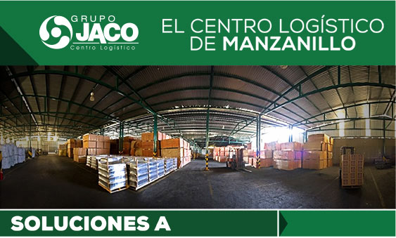

|  | |||||
|
|||||
Garantizamos a los importadores y exportadores de servicios portuarios óptimos, a través de la planeación efectiva y logística eficiente, apoyados en un sistema de calidad y personal competente que ofrezca atención personalizada, rapidez de respuesta, información veraz y propuesta de soluciones en nuestras instalaciones seguras y adecuadas a las necesidades operativas. TERMINAL EXTERNA DE OPERACIONES PORTUARIAS JACO |
|||||